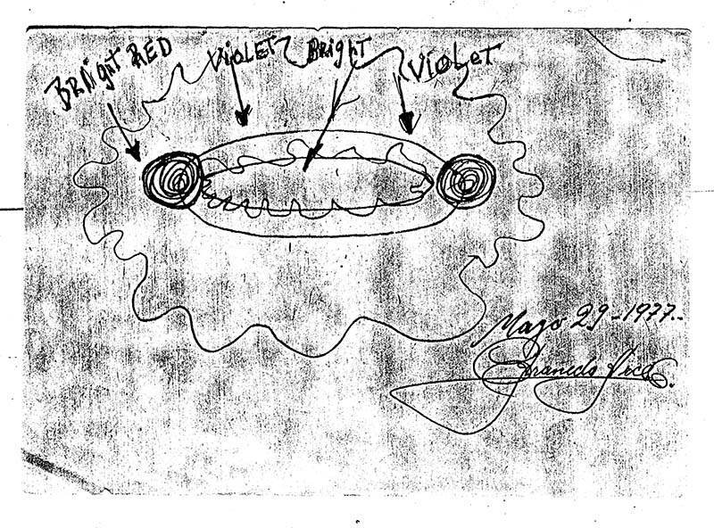
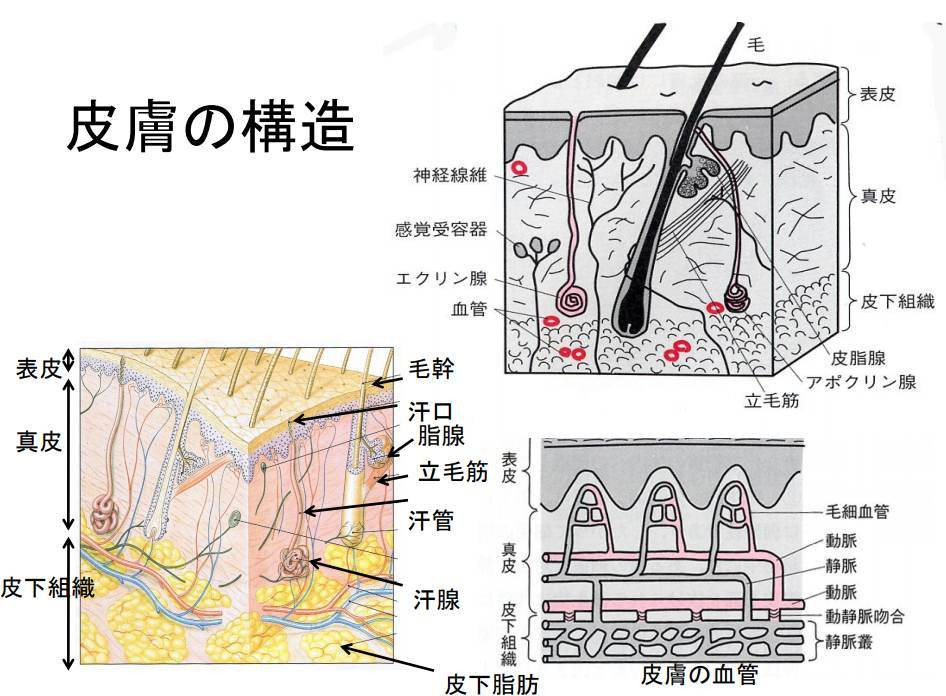
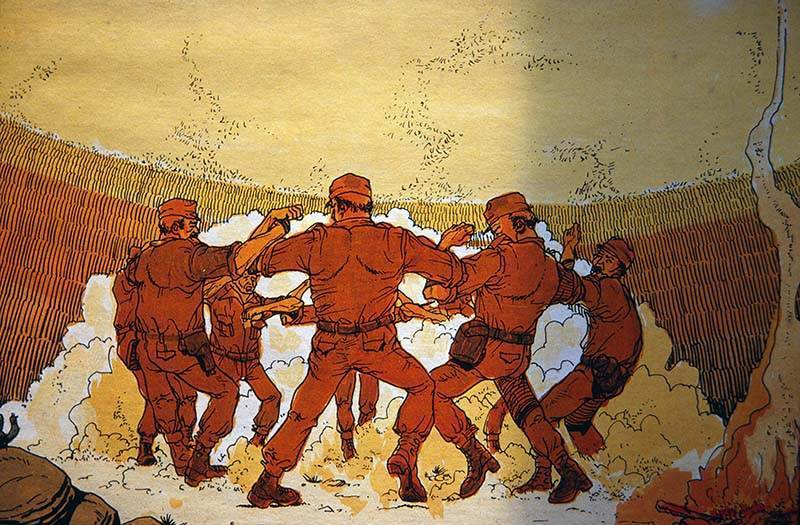
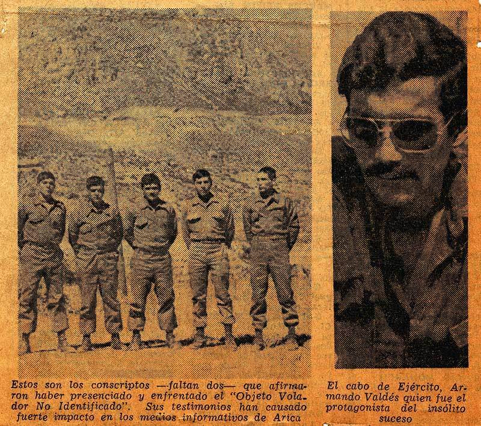
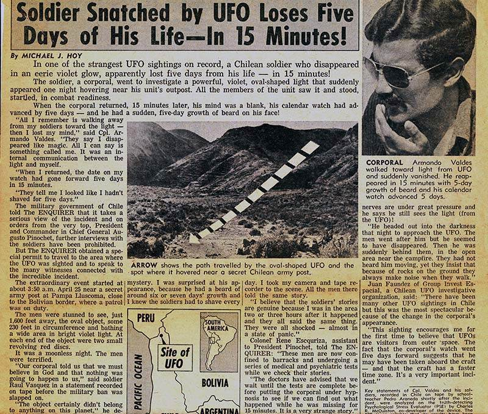
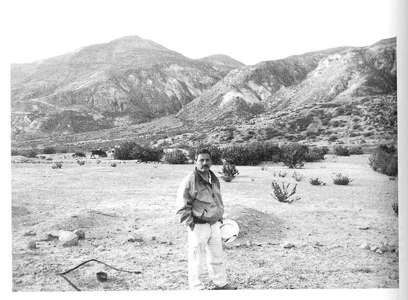
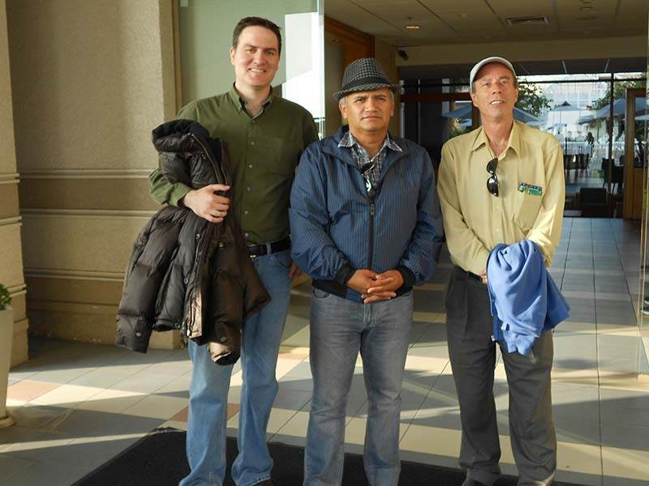
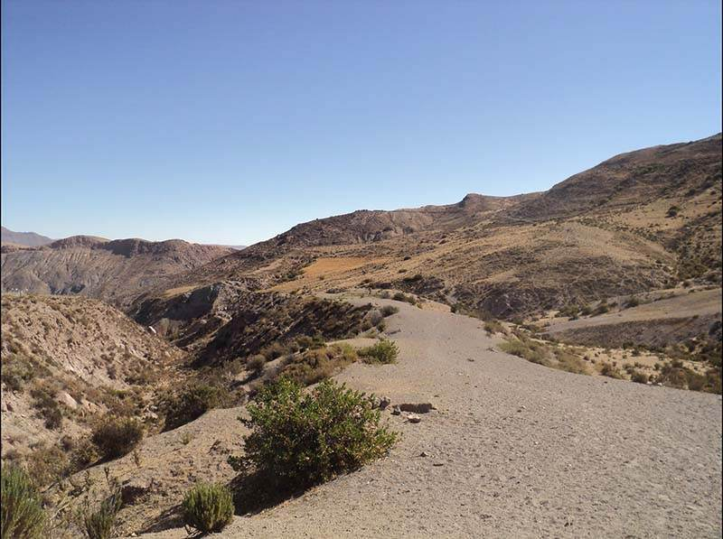

1977-04-25, Chile : UFO 出現→調査に向かった隊長が消失→15分後に出現したが 5日分の時間が経過→この時間跳躍の謎を解く
 
履歴
(2021-05-25) 追加。15分間で 5日分の時間が経過した謎を無理なく説明する。 (2021-05-19) 追加 (2020-08-03) 画像追加 (2020-07-31) 追加。タイトル変更。 (2020-02-25) 追加 (2020-02-18) 作成はじめに
・極めて珍しく、かつ興味深い事例。Jacques Vallee の話の元ネタがこれだったのだろう。 ・意味不明のタイトルなので、後日見直すつもり。 ・時間がないので、今はとりあえず、ソースを引用しておく。注目箇所
・時計と髭が時間経過を示す。Valdez would not be gone for long, stumbling back into the camp a mere 15 minutes later, but something was obviously very wrong with him. He looked haggard, worn out, wild-eyed, and most oddly of all seemed to have accrued several days of beard growth in just that short span of time, when he had been clean shaven just minutes before. The patrol leader seemed to have some trouble walking, and when he sat down he merely stared off into the distance in a trance-like state and cryptically mumbled “You don’t know who we are or where we come from but we will be back soon” before passing out. When the men searched him, they found that the watch Valdez had been wearing inexplicably showed that a full 5 days had gone by, even though he had only been gone a few minutes.・最近のインタビューでも事実だと証言。Valdez coming forward on an interview with Terra.cl. to claim during his research for his own book on the matter titled The Shadow of the Truth, that in retrospect he knew that he was never really abducted by aliens at all, although the strangeness with the watch and the beard was all true.引用
On April 25 of 1977, a patrol of 6 soldiers in the desert badlands wilderness of a remote area of Pampa Lluscuma, near Putre, Chile, were settled down in their camp at approximately 4:15 AM when something caught their attention in the star-flecked expanse of sky above. The men watched in awe as two very bright lights descended from the heavens, with one of them silently approaching close to the camp to show that it was a brightly lit violet oval of light with two pinpoints of red light at either end, and another of the objects sinking down behind some foothills in the near distance, its violet glow still visible frosting the hills. The remaining light apparently then dropped down to a low altitude and seemed to just roam about over the desert, casting everything in that spooky glow. The men at first cowered under emergency blankets, but it soon became clear that there was no impending danger, and that these lights were simply hovering over the landscape. And thus would begin one of the strangest UFO encounter reports to ever come out of the country of Chile. At the time this whole light show was odd enough that they felt it was worth investigating, and the leader of the patrol, a Cpl. Armando Valdez volunteered to venture out towards where the unknown light had sunk behind the hills to check things out. Valdez checked that his weapon was loaded and ready, and trudged out across the parched, scrub infested moonscape towards the unknown as his men warily gazed out towards that eerie glow in the distance. Valdez would not be gone for long, stumbling back into the camp a mere 15 minutes later, but something was obviously very wrong with him. He looked haggard, worn out, wild-eyed, and most oddly of all seemed to have accrued several days of beard growth in just that short span of time, when he had been clean shaven just minutes before. The patrol leader seemed to have some trouble walking, and when he sat down he merely stared off into the distance in a trance-like state and cryptically mumbled “You don’t know who we are or where we come from but we will be back soon” before passing out. When the men searched him, they found that the watch Valdez had been wearing inexplicably showed that a full 5 days had gone by, even though he had only been gone a few minutes. Valdez and his men Valdez would awaken from his stupor at 7 AM, and oddly his watch seemed to be frozen in time, still stuck at exactly the same point it had been when he had returned to camp. He was more lucid this time, but try as he might he could remember nothing of what had happened to him after he had left that camp, much less why his watch and beard growth seemed to indicate that he had been gone for 5 days rather than 15 minutes. He would later say of his bizarre ordeal: The surprising thing was the way it approached us. As soldiers we are trained to deal with any situation. But this phenomenon didn’t seem to have any logical explanation. I would like to regain my memory of those fifteen minutes. I would even like to submit to hypnosis to draw out information about what happened. The case became a media sensation in Chile, but there was some effort made to stem the notoriety of it all, with Chilean President and Commander in Chief Augusto Pinochet eventually putting a ban on any further interviews with the witnesses, and it then sort of slipped into obscurity until some researchers began digging into the story again. Notably journalist and researcher Patricio Abuselme went about reopening investigations into this strange UFO encounter, interviewing witnesses and Valdez himself for his 2010 book La noche de los centinelas (The Night of the Sentries), which he spent nearly 8 years compiling after extensive digging around. Abuselme says of the project: This is the case that made Chilean ufology known worldwide. However, no one bothered to conduct a serious, in-depth investigation of the case. I took up the challenge in 2002, and it took me eight years to compile the protagonists’ accounts and reassemble this “impossible story.” When I started this investigation, I did so in the secret hope of explaining the whole case in conventional terms. And I thought I was well on the way until the main protagonist of the story debunked the cases most controversial aspects - the growth of his beard and the wristwatch’s date change - by providing conventional explanations. The problem is that when I tried to corroborate it with the other witnesses, they provided a version that was mutually congruent, but at odds with the one offered by Valdes. For this reason, the book poses a controversy. If someone is looking for a story of mystics in direct contact with Martians, he or she won’t find it here. What they will find is information, information and more information. The outcome of a detailed journalistic investigation that enables the reconstruction of an intriguing real case that captured headlines over 30 years ago. Interestingly, it has come to light in recent years that the story has indeed changed somewhat, with Valdez coming forward on an interview with Terra.cl. to claim during his research for his own book on the matter titled The Shadow of the Truth, that in retrospect he knew that he was never really abducted by aliens at all, although the strangeness with the watch and the beard was all true. Wait, what? Valdez, by this time retired from the military, would give some shocking comments on the affair that had kept people on their toes looking for answers for decades. However, he far from writes it all off as a fiction, rather being very cryptic about what actually happened. He would say in this interview about his hypnotic regression and the insights he gained: I’ve been fully involved in developing my book and furthermore, looking into my experience, since I wish to be as factual as possible in my story. Truly, I wasn’t abducted. This is the reason for sensitive nature of what I’m putting forth in the book. Some important background details are being released. Look, it’s really complicated to explain all of a sudden. That’s the reason behind my trip to Putre, my scientific studies and the book I’m writing, because it’s all very complicated. I would say that I knew immediately how things had happened. What I’m explaining in my book [is making known] the reasons for which certain items went off on another track. Indeed. I didn’t think at first that I’d been abducted, although the matter of the growth of beard is true, as well as the subject of my wristwatch. But for this reason I have taken to writing the book to explain the reasons behind all of these things. My story and explanations have been accepted to a certain extent, and I have told them certain things and in a certain manner. There are many who hold points of view different from my own and I don’t have to deny that there are contradictions. But as I said, the story is mine and they have not influenced me at all regarding my book. In fact, there are those who may agree or not agree with my book tomorrow, and will not stop what I’m doing. There are mixed items. The term UFO today is contaminated by another type of thing, and I prefer to speak in terms of FANI (Unidentified Aerial Phenomena). I think that in my experience there is a bit of everything-a good measure of paranormal phenomena, strange effects, lights, many things acting in unison and this is what I am showing in my book, although it’s been hard for me to convey on paper what I felt, what I experienced and what really happened. It doesn’t make much sense to be honest, and making it even more confusing was an interview Valdez did with researcher Carlos Vergara, which was translated by Mexican UFO researcher Scott Corrales. It is a bit of a confrontational interview, with Valdez being typically cryptic and constantly plugging his book, and here is an excerpt: - Were you abducted? - In the context, I would say no…. In other words, had I been abducted, I would have been sucked up and taken by a spacecraft somewhere else. But I will make the truth known in my book.” - Excuse me, Corporal Valdes. Cut the book talk and tell me something more solid. - No, no, no. That’s not what its about. I’m not trying to promote myslef. All right, what do you want to know. Ask me and I’ll tell you.” - Where the hell were you those fifteen minutes? - I can tell you that I was always present and looking at my men. I even heard everything they said. - So what’ll it be then? Were you abducted or not? - I can’t tell you yes or no. I have a truth, but it’s a long story, son. The whole phenomenon must have transpired here on Earth. The truth is harder to explain than a lie. If I said that I went to another galaxy, it would be easier. This is harder to believe. - I don’t believe you… - You see? I only want to be at peace with myself. You want the truth? I was never abducted! But another phenomenon occurred. - What phenomenon? - Something very close to home, having to do with Earth. And it happened to me with a purpose I have just come to realize. I speak of future things in my book. They call it eschatology… What in the world is he talking about? It seems in a sense that Valdez is just as confused about what happened as anyone else, and for all of this we are no closer to any real answers as to what he encountered out in that desert wilderness, if anything. was he abducted or not? What does he think really happened? What is the meaning of his beard growth, the weirdness with the watch, and the fact that five others all witnesses the UFOs that kicked off the whole thing? It is hard to say, but it is certainly known that Chile has been rather a hotbed of UFO sightings over the years, so it seems that there could be something genuinely strange going on here. As to what that might be is anyone’s guess, and the Valdez Chilean UFO Encounter remains just as enigmatic as it always has been. ref: The Bizarre Case of the Valdez UFO Encounter in Chile | Mysterious Universe - https://mysteriousuniverse.org/2020/02/the-bizarre-case-of-the-valdez-ufo-encounter-in-chile/(2020-02-25)
（以下、2020-07-31 追加分）前置
・この件に関するかなり詳細な記事。重要なので全文を引用し、DeepL による機械翻訳も添付した。 ・上で記載した・最近のインタビューでも事実だと証言。と、下のValdez coming forward on an interview with Terra.cl. to claim during his research for his own book on the matter titled The Shadow of the Truth, that in retrospect he knew that he was never really abducted by aliens at all, although the strangeness with the watch and the beard was all true.この調査の最中に、バルデスはアブスレメとのインタビューの録音で、この話の重要な部分を撤回するという爆弾発言をした。バルデスは、光の玉が兵士の近くでホバリングしていたという話に固執し続けたが、アブスレメには、自分がUFOの中で姿を消したことはないと伝えた。彼は、兵士達に小便をさせるためにその場を離れ、その後、彼が失踪したとされる重要な１５分から２０分の間、壁の後ろにいたと主張した。彼は、その時、自分が消えたふりをして兵士たちにいたずらをすることにしたと言いました。彼は、数日間剃っていなかったと言って髭の成長を説明しました。また、腕時計が故障していて、日付が変わったのは偶然だとも言っていました。が完全に相違するが、たぶん前者の方が新しいのだろう（未確認）。コメント
・重要な箇所が DeepL では完全に無視され無かったことになっているので注意。たとえば…the soldiers reported that at intervals he would exclaim in a strange voice something like, “You don’t know who we are nor from where we come, but I tell you we will return soon!”という箇所。 ・この箇所は We と I を意識して使い分けている点に注意（スペイン語から英語への翻訳で We と I を混同する可能性はまずない）。この未知の存在は単独ではなく仲間と行動しており、仲間を代表して発言している（事を装っている）。 ・また、we will return soon! と言ったとおり、 Valdes himself had a second UFO sighting in 1980 and also hinted in the TVN interview of encountering mysterious “Men in Black,” throwing eschatological tidbits here and there. として再来したようだ。だとすれば、他の無数の事例では ET が abductee/contactee に告げる予言や約束は実現しないのが普通だが、この事例は珍しい例外らしい。出典
The Strange Time-Warp Case of Corporal Armando Valdes - Openminds.tv - http://www.openminds.tv/the-strange-time-warp-case-of-corporal-armando-valdes/42627引用
▼展開
Most countries have a single UFO case that seems to overshadow all others in terms of fame, longevity, and controversy. For instance, the U.S. has the Roswell incident and England has the Rendlesham Forest close encounters. The country of Chile is no different, where the strange time-warp story of Corporal Armando Valdes and seven soldiers of the Chilean Army have long dominated the local ufological scene. The incident occurred in 1977 in a desolate mountain desert site called Pampa Lluscuma, near the town of Putre in Chile’s northern Tarapaca region.  A view of Pampa Lluscuma in northern Chile, showing the type of terrain where the 1977 UFO incident took place. Image credit: Elias Munoz This case occurred in one of Chile’s so-called zonas calientes (“hot zones”) for UFO sightings, but what distinguishes it from all other close encounters is that the main witness, Corporal Valdes, apparently experienced physiological and mechanical effects after disappearing for about fifteen to twenty minutes?presumably taken inside a huge luminous globe hovering near the soldiers. The corporal reappeared in a state of shock. The strangest part of the story is that, upon his return, Valdes had a five-day growth on his beard and his wristwatch had stopped after the short experience but its calendar showed five days in the future, April 30, 1977 instead of the actual date of April 25. These effects made the case truly unique. It’s also noteworthy that the Chilean Army didn’t disavow the incident and, on the contrary, allowed the publication and broadcast of interviews with Valdes and the soldiers. The Valdes incident triggered an unprecedented wave of public interest in Chile and, to a lesser extent abroad, where it was covered by the French news agency Agence France-Presse, and the U.S. tabloid, the National Enquirer. A drawing of a disheveled corporal even appeared in the Ripley’s Believe It or Not! book series. UFO photo taken in Putre in the mid-1980s obtained by researcher Jorge Anfruns in one of his many trips to the Arica region. Image credit: Huneeus CollectionThe Basic Facts
Date: April 25, 1977. Location: Stables of the Chilean Army in Pampa Lluscuma, a mountainous desert site in northern Chile. The nearest town is Putre in the foothills of the Andes, about 150 kilometers to the west of the Port of Arica. Time: The UFO was first spotted at 3:50 a.m. by a soldier on guard duty at a Chilean Army stable, who immediately alerted his leader, Corporal Valdes, and his six other companions. The UFO hovered close to the ground at a distance of about 500 meters from the soldiers. At approximately 4:15 a.m., the corporal decided to investigate it himself. He disappeared for fifteen minutes, returning at 4:30 a.m. and immediately lapsing into semi-consciousness. He regained consciousness at around 7:00 a.m. The UFO stayed on the scene until dawn, taking off at 6:35 a.m. Witnesses: Twenty-three-year-old Corporal Valdes, who then had five years of service in the Chilean Army, was accompanied by seven conscripts from the Rancagua Regiment, which was under the command of the Huamachuco Brigade based in Arica. Investigation: The initial investigation of the event was conducted by Pedro Araneda, a school teacher in Putre. Araneda was the first person to encounter the baffled soldiers when they returned to Putre following the UFO encounter. Araneda immediately returned to the scene of the incident with the witnesses, where he proceeded to tape record a long interview with all of them. He was later quoted saying, I was surprised at the corporal’s appearance. He had around six to seven days’ growth of beard. I knew soldiers have to shave every day. It was obvious that the soldiers had been through some kind of extraordinary experience. Even two or three hours after it happened, they were all still in a state of complete shock, I would say, near panic. And all the men told me the same story. To this day, Araneda’s classic interview remains the original, comprehensive first-hand source for the case.  Dramatic reconstruction by artist Patrick Claeys of the Pampa Lluscuma close encounter from the French UFO comic OVNI Temoignages (UFO Testimonies) based on the investigations of journalist Jean-Claude Bourret. Image credit: J.-C. Bourret/Patrick Claeys Dissemination: For a few days, the military governor of Arica censored publication of Araneda’s sensational tape in the local newspaper, La Estrella de Arica, in order “to avoid speculations and unmeasured commentaries lacking scientific basis,” according to the official communique at the time. This was during the early years of General Augusto Pinochet’s military regime in Chile, a time when media censorship was common. However, since this was not a political story, the press insisted and extended excerpts of the tape were finally published in the local Arica newspaper. On May 19, 1977, the story appeared on the front page of El Mercurio, the country’s most prestigious and influential newspaper. As a result of the widespread publicity, the Chilean Army’s Chief Command eventually issued a formal statement which, significantly, confirmed the accuracy of the reports published by the press. The communique added, somewhat cryptically, “The Army does not pronounce itself with regard to the facts described by members of the patrol.” Later Developments: No significant new evidence about the case emerged until the late-1990s, when a couple of the soldiers were located by ufologists and were eventually interviewed for a UFO series broadcast on Chile’s national television network TVN. The seven soldiers who witnessed the close encounter in 1977 had long left the service; only Valdes had remained in the army, where he was promoted to sergeant and finally retired in 1999. Valdes himself appeared on a primetime popular talk show on TVN right after his retirement. He continued to reaffirm the validity of the experience, as did the other soldiers, although various aspects were clarified and some new things revealed. A new investigation was launched in 2002 by two Chilean researchers, journalist Patricio Abusleme and skeptic Diego Zuniga. They located most of the original witnesses, and some of them agreed to be interviewed formally. It was in the course of this investigation that Valdes dropped a bombshell in a recorded interview with Abusleme, recanting a crucial part of the story. He continued to stick to the story of the ball of light hovering near the soldiers, but he informed Abusleme that he never disappeared inside the UFO. He claimed that he left the soldiers to urinate and then stayed behind a wall throughout the key fifteen to twenty minutes of his alleged disappearance. He now said that he decided then to play a prank on the soldiers by pretending he had vanished. He explained the growth of the beard saying he hadn’t shaved for several days. He also said that his wristwatch wasn’t working, and the date change was just a coincidence. However, Valdes’s confession is not as simple as it seems. For one, the other soldiers still support the original version. Then, there is the additional important factor that Valdes became a devout evangelical Christian many years ago, a member of the Union de Centros Biblicos of Temuco, of which he is now a bishop. One can argue the denial on the part of Valdes is based on his religious faith, a position which Abulesme himself considers plausible. UFO sighted in Arica and Magallanes,” headline of the first front page article about the Valdes case published in El Mercurio, Chile’s most important newspaper, on May 17, 1977. Image credit: Huneeus CollectionThe Original Version
Like many famous UFO cases, such as Roswell, the Valdes affair has become somewhat of a myth. Many rumors and wild tales were added over the years, including that some of the soldier’s rifles were bent mysteriously and that there were other military patrols involved as part of secret maneuvers with the Israelis. None of these stories were proven true. Valdes himself had a second UFO sighting in 1980 and also hinted in the TVN interview of encountering mysterious “Men in Black,” throwing eschatological tidbits here and there. For these reasons, it is important to rely on the original recorded interview made by Pedro Araneda just a couple of hours after the close encounter, a very unusual and lucky circumstance in UFO investigations. One thing that was censored by the military in all the original newspaper articles is that Corporal Valdes was not in charge of a patrol, as was stated in the press reports, but his small unit was instead guarding a large army stable with hundreds of horses. Horses are the best way to move around fast in the rugged terrain near Putre, but because Pampa Lluscuma was located close to the border with Peru and there were border tensions in 1977, the location of the stables was considered a military secret. Thus, the military created a cover story of a routine army patrol. The incident begins on April 25, 1977, at 3:50 a.m., in the cold and desolate area of Pampa Lluscuma, when the night watchman, known only as Private Rosales, first spotted what looked like two stars descending over a nearby hill. Rosales immediately alerted his superior, Corporal Valdes, as well as the other six soldiers who were resting near a campfire. As soon as the corporal saw the lights, he extinguished the campfire, and all seven soldiers gathered in shoulder-to-shoulder combat position, suspecting the lights were a smuggling plane. But, the soldiers soon realized there was much more to it than that. Their rifles could not stop what they described in the Araneda tape as an object “round as a ball . . . half oval . . . expanding and contracting, with a violet halo, like a cloud or a fog, with two flashing orange lights on either side.” One of the UFOs descended extremely slowly to the ground, at a distance of about 500 meters from the military patrol. An interesting side note is that all the animals in the area, including the horses, the patrol’s dog, and a nearby flock of sheep, supposedly were paralyzed by the presence of the object and became totally silent. According to Corporal Valdes, “the hill was entirely illuminated by this object, and we could easily make out its contours and fields even though it was a pitch-black moonless night.” Likewise, there are reports that the patrol’s radio equipment malfunctioned, which together with the effect on the animals, the physiological changes in the corporal’s beard and the mechanical effects on his watch, make this case a classic Close Encounter of the Second Kind (CE-2).  A rough sketch of the UFO made by Pedro Araneda, based on the testimonies of Cpl. Valdes and the seven soldiers of the Chilean Army. Image credit: Huneeus Collection In the original interview, the corporal says he screamed in the direction of the violet light, “Go away! In the name of God I order you to go!” In those moments, continued Valdes, “we were ready for anything, to die together if necessary. But nothing would separate us. We made an oath to stay together.” Yet despite the oath, Valdes left the group around 4:15 a.m. and started walking towards the light. He was later unable to recall his motives for leaving the group. “The only thing I can tell you,” he said to Araneda, “is that something terrible was calling my attention . . . something was attracting me . . . It was like an internal communication with the light.” The other soldiers all said that, as Valdes walked towards the violet light, he suddenly disappeared. For the next fifteen-to-twenty minutes the soldiers were “yelling and calling him by name while the light was still there.” But, there was no response. The corporal’s return to the camp was almost as strange as his disappearance in that he suddenly emerged in a kind of somnambulistic state behind his companions. One of them later assured Araneda that “we didn’t hear his footsteps when he came back. Usually, you hear a person when he comes in the silence of the night.” Another soldier recalled that “for a few seconds the corporal looked at us as though he didn’t know us, and moving his head backwards and forwards, he was saying, ‘the light . . . the light’.” Valdes remained in this state until 7:00 a.m. (the UFO had taken off at 6:35 a.m.), and the soldiers reported that at intervals he would exclaim in a strange voice something like, “You don’t know who we are nor from where we come, but I tell you we will return soon!” Two specific details were noticed by the soldiers, which would make this case a cause celebre in ufology for its sheer strangeness. First, the corporal had a five-to-seven day growth of beard, even though he had shaved the previous morning. Second, his watch had stopped at 4:30 a.m. (the time he returned from the UFO) yet the calendar on his digital watch was five days in advance, reading April 30 instead of April 25, the actual date. Valdes insisted that his mind was completely blank as to what happened during the brief time he was missing. He only remembered walking towards the strange light. He told Araneda:From there on, I lost all sensations. The soldiers told me I disappeared, as though by magic. The only thing I remember, what appears in my mind, is something like the sensation I have when I am extremely sleepy . . . I seemed to disappear into a deep well, something round, an abyss . . . from there my mind is void.At another moment in the tape, Valdes said that the event was “extraordinary, and I tell you that we are eight minds . . . It’s possible for one person to suffer a hallucination, an apparition, but here eight people are saying the same thing.” He went on, “What I don’t remember is what happened to me. I only know what the soldiers told me.” But he also told Araneda he thought the whole thing was a warning, that whatever was behind that light “was trying to tell me that this was not the last time we were going to see each other.”  The National Enquirer article on the Valdes case, published on June 28, 1977. Image credit: Huneeus Collection Those were the rough facts of the Valdes case as they were originally reported in the Chilean press on the basis of Pedro Araneda’s taped interview with the soldiers. Although the military governor of Arica censored the publication of the tape for a few days, large excerpts of it were finally published in La Estrella de Arica, El Mercurio, and other newspapers. This national flurry led to the Chilean Army issuing an official communique, which stated the following:1. The army does not pronounce itself over the facts related by the members of the patrol. 2. From the moment in which the event took place until this was reported by the press, the institution (army) had not issued an official version. 3. In accord with consultations undertaken through official means, it is stated that the versions given by the press until this moment are generally coincident with the accounts from the members of the patrol.Although the communique is written in a particularly cautious language, the main point is that the witnesses’ accounts published by the press were “coincident” to those given by the soldiers to their own army superiors. As Chile was then ruled by a military regime, no further data concerning a possible internal investigation was released by the army.A Complex Case
Researcher Patricio Abusleme’s book, La noche de los centinelas (The night of the guards), is no doubt the definitive work about the case. It has a wealth of information, including transcriptions of all the original documents, newspaper articles, and the more recent interviews conducted by him and his colleague Diego Zuniga. Abusleme explains in his book that initially he was happy to accept the recantation of Valdes: “When I started to investigate methodically and go deeper into various aspects of the night of the guards, I had the secret hope that I would be able to explain the whole episode in conventional terms.” Zuniga, on the other hand, accepted the recantation, writing a long article about it, “Satanic Abduction: Corporal Valdes Rewrites the Most Incredible Story of Abduction Known in Latin America,” with his skeptical colleague, the well-known Argentinean journalist and longtime ufologist Alejandro Agostinelli. However, in the end things are not clearly black and white. Abusleme wrote in his book,As I continued my investigation, I was hoping to find testimonies which could corroborate and complement the new version of non-commissioned officer (Ret.) Valdes. However, to my surprise and bafflement, I only found testimonies which reaffirmed the original story, which coincided and complemented each other while refuting the current version of Valdes.Humberto Rojas, one of the original soldiers who would go on to become a policemen for some thirty years until his recent retirement, confirmed all the basic facts contained in the original version of the story, including the beard and the watch. One of the main problems with Corporal Valdes’s new version is the growth of his beard. Military rules everywhere require that all enlisted personnel and officers must shave every day, and the Chilean Army, with its old German traditions and discipline, was particularly strict in the Pinochet era. That a corporal, who must show a good example of proper behavior to his soldiers, could go around without shaving for several days was just not allowed. Then, there is the wristwatch problem. If the watch wasn’t working, why did Valdes bother to put it on that day? Plus the extraordinary coincidence that the watch malfunctioned exactly at the time of the Pampa Lluscuma event, but the calendar demonstrated a date five days ahead.  Valdes in the exact spot of the 1977 incident in 2002, when he gave Patricio Abusleme his revisionist version of the case. Image credit: Patricio Abusleme Yet another crucial problem is that the new version of the event doesn’t coincide at all with what Valdes told his superiors?first his commander in Arica and later doctors and psychologists at the military hospital in Santiago where he was under observation for several days. The psychological evaluations and recommendations written by Dr. Roberto Abarca and Captain Dr. Roberto Lailahacar Chavez (both published in Abusleme’s book) never mention the prank story, even though the reports were not at all sympathetic to the corporal. At that time, Valdes was clearly sticking to the original version, and the doctors tried to find psychological reasons for the experience. They recommended to the army that Valdes should be reassigned to a different unit and that “the [UFO] subject should not be discussed with him, and he should be forbidden to give interviews to the press and TV.” Despite all the problems and publicity, Valdes was not discharged from the army, but was instead reassigned to a regiment in the southern city of Temuco, where he still lives. A final serious problem with Valdes’s new version is the behavior of Valdes right after the 1977 incident, which was attested by the seven soldiers and Pedro Araneda. Valdes was clearly affected by the experience, passing out and saying strange things. Unless he was a great actor, he seemed far more like someone who just experienced something truly unknown than a guy playing a prank. pic bear7 (Left to right): Patricio Abusleme, Humberto Rojas and the author of this article, Antonio Huneeus. Image Credit: Antonio Huneeus For all these reasons, I fully agree with Abuselme’s final conclusion that all the evidence “is pointing to a denial [by Valdes] of the possibility that UFO abductions could be real, in an attempt to fit his unusual experience with his religious convictions. On the other hand, he could be looking for an easy solution to end decades of being besieged by journalists.” In the end, the conflicting versions of the Valdes case show how difficult it is to prove conclusively that any UFO case is either unknown or prosaic. But regardless of what the final verdict may turn out to be in the Valdes case?if one is ever reached?there is no doubt that this close encounter is at least of great sociological importance in the history of Chilean ufology and, to a lesser extent, that of ufology in general. This article originally appeared in Issue 19 (April/May 2013) of Open Minds Magazine. The post The Strange Time-Warp Case of Corporal Armando Valdes appeared first on Openminds.tv.
DeepL
ほとんどの国では、名声、寿命、論争の面で、他のすべてのものに勝るとも劣らないようなUFO事件が一つだけあります。例えば、アメリカにはロズウェル事件があり、イギリスにはレンデルシャムの森での遭遇事件があります。チリの国も同様で、アルマンド・バルデス伍長とチリ軍の7人の兵士の奇妙なタイムワープの物語は、長い間、地元のユーフォロジーのシーンを支配してきました。事件は1977年、チリ北部タラパカ地方のプトレの町の近くにあるパンパ・ルスクマと呼ばれる荒涼とした山岳砂漠地帯で起きました。  1977年のUFO事件が起きたチリ北部パンパ・ルスクマの風景。画像クレジット: Elias Munoz この事件は、チリのいわゆるUFO目撃のホットゾーンの一つで起こったが、他のすべての密接な遭遇と区別するものは、主な目撃者であるバルデス伍長が、約15分から20分間姿を消した後、明らかに生理的、機械的な影響を経験したことである-おそらく兵士の近くでホバリングしている巨大な発光球体の中に連れて行かれたのだろう。伍長はショック状態で再登場した。この話の最も奇妙な部分は、彼が戻ってきたとき、バルデスは彼のひげに5日間の成長があり、彼の腕時計は短い経験の後に停止したが、そのカレンダーは、実際の日付である4月25日ではなく、5日後の1977年4月30日を表示していたことである。これらの効果により、このケースは本当にユニークなものとなった。また、チリ軍がこの事件を否定せず、それどころかバルデスや兵士たちのインタビューを掲載・放送することを許可したことも特筆すべき点である。 バルデス事件は、チリでは前例のない世間の関心の波を引き起こし、海外では、フランスの通信社アガンス・フランス・プレスや米国のタブロイド紙ナショナル・エンクワイアでも報道された。体のだらしない伍長の絵は、リプリーの本シリーズ「Believe It or Not!基本的な事実
日付は 1977年4月25日（昭和52年4月25日）。 撮影場所。チリ北部の山岳砂漠地帯パンパ・ルスクマにあるチリ軍の厩舎。最寄りの町はアンデス山脈の麓にあるプトレで、アリカ港から西に約150kmのところにある。 時間：UFOは、すぐに彼のリーダー、バルデス伍長と彼の他の6人の仲間に警告したチリの陸軍の馬小屋で警備任務の兵士によって、午前3時50分に最初に発見された。ＵＦＯは兵士から約５００メートルの距離で地上近くでホバリングしていた。午前4時15分頃、伍長は自分で調査することにした。伍長は１５分間姿を消し、４時３０分に戻り、すぐに半意識状態に陥った。ＵＦＯは明け方まで現場にとどまり、午前６時３５分に離陸した。 目撃者 当時23歳のバルデス伍長はチリ軍に5年間勤務していたが、アリカに拠点を置くフアマチュコ旅団の指揮下にあったランカグア連隊から7人の徴兵を伴っていた。 調査。この事件の最初の調査は、プトレの学校教師であるペドロ・アラネダによって行われた。アラネダは、UFO遭遇後、プトレに戻った兵士たちが困惑しているところに最初に遭遇した人物である。アラネダ氏はすぐに目撃者と一緒に事件現場に戻り、そこで目撃者全員との長いインタビューをテープで録音する作業を進めた。彼は後に次のように述べていると引用されています。 伍長の姿に驚いた。彼は6～7日分くらいのヒゲが生えていた。兵士は毎日髭を剃らなければならないことを知っていた。兵士たちは、明らかに非日常的な体験をしていた。それが起こってから2?3時間経っても、彼らは皆、完全にショックを受けている状態で、パニック状態に近いと言ってもいいでしょう。男達は皆同じ話をしてくれました 今日に至るまで、アラネダの古典的なインタビューは、この事件のオリジナルで包括的な第一級の情報源であり続けています。 フランスのUFOコミック「OVNI Temoignages（UFO Testimonies）」に登場するパンパ・ラスクマの接近遭遇を、アーティストのパトリック・クレイズがドラマチックに再現しました。イメージクレジット: J.-C. Bourret/Patrick Claeys 拡散 当時の公式コミュニケによると、アリカの軍事総督は数日間、アラネダのセンセーショナルなテープを地元紙ラ・エストレラ・デ・アリカに掲載することを検閲し、「科学的根拠を欠いた憶測や測り知れないコメントを避けるため」とした。これはチリのアウグスト・ピノチェト将軍の軍事政権の初期、メディア検閲が一般的だった時代のことである。しかし、これは政治的な話ではなかったので、マスコミは主張し、テープの延長された抜粋は、最終的に地元のアリカ新聞に掲載されました。1977年5月19日、この話は同国で最も権威と影響力のある新聞「エル・メルクーリオ」の一面に掲載された。広まった宣伝の結果、チリ陸軍の最高司令部は最終的に公式声明を発表し、報道の正確性を確認した。その声明には、「陸軍は、パトロール隊のメンバーが記述した事実について、自らの見解を表明するものではない」と、いささか怪しげに付け加えられています。 その後の展開。1990年代後半になるまで、この事件に関する重要な新しい証拠は出てこなかったが、数人の兵士がUFO学者によって発見され、チリの国営テレビネットワークTVNで放送されたUFOシリーズのインタビューを受けた。1977年に接近遭遇を目撃した7人の兵士は、長い間サービスを去っていた;唯一のバルデスは、彼が軍曹に昇進し、最終的に1999年に引退した陸軍に残っていた。バルデス氏は退役直後、ＴＶＮのゴールデンタイムの人気トーク番組に出演した。バルデスさんは、他の兵士たちと同様に、様々な側面が明らかになり、新たな事実が明らかになったが、この体験の正当性を再確認し続けた。新しい調査は、ジャーナリストのパトリシオ・アブスレメ氏と懐疑論者のディエゴ・ズニガ氏という2人のチリ人研究者によって2002年に開始された。彼らは元の目撃者のほとんどを見つけ出し、そのうちの何人かは正式なインタビューを受けることに同意した。 その後の展開。1990年代後半になるまで、この事件に関する重要な新しい証拠は出てこなかったが、数人の兵士がUFO学者によって発見され、チリの国営テレビネットワークTVNで放送されたUFOシリーズのインタビューを受けた。1977年に接近遭遇を目撃した7人の兵士は、長い間サービスを去っていた;唯一のバルデスは、彼が軍曹に昇進し、最終的に1999年に引退した陸軍に残っていた。バルデス氏は退役直後、ＴＶＮのゴールデンタイムの人気トーク番組に出演した。バルデスさんは、他の兵士たちと同様に、様々な側面が明らかになり、新たな事実が明らかになったが、この体験の正当性を再確認し続けた。新しい調査は、ジャーナリストのパトリシオ・アブスレメ氏と懐疑論者のディエゴ・ズニガ氏という2人のチリ人研究者によって2002年に開始された。彼らは元の目撃者のほとんどを見つけ出し、そのうちの何人かは正式なインタビューを受けることに同意した。 この調査の最中に、バルデスはアブスレメとのインタビューの録音で、この話の重要な部分を撤回するという爆弾発言をした。バルデスは、光の玉が兵士の近くでホバリングしていたという話に固執し続けたが、アブスレメには、自分がUFOの中で姿を消したことはないと伝えた。彼は、兵士達に小便をさせるためにその場を離れ、その後、彼が失踪したとされる重要な１５分から２０分の間、壁の後ろにいたと主張した。彼は、その時、自分が消えたふりをして兵士たちにいたずらをすることにしたと言いました。彼は、数日間剃っていなかったと言って髭の成長を説明しました。また、腕時計が故障していて、日付が変わったのは偶然だとも言っていました。 しかし、バルデスの告白はそう単純なものではない。一つには、他の兵士たちがまだオリジナルのバージョンを支持していることです。さらに、バルデスは何年も前に敬虔な福音派キリスト教徒となり、テムコのセンター・ビブリコス連合（Union de Centros Biblicos of Temuco）のメンバーであり、現在は司教を務めているという追加の重要な要因がある。バルデスの否定は彼の信仰に基づいていると主張することができますが、これはアブレスメ自身がもっともらしいと考える立場です。 1977年5月17日、チリで最も重要な新聞であるEl Mercurioに掲載されたバルデス事件に関する最初の一面記事の見出し「アリカとマガラネスでUFOを目撃」。画像出典：Huneeus Collectionオリジナル版
ロズウェルのような多くの有名なUFO事件と同様に、バルデス事件は幾分神話と化している。兵士のライフルが不思議に曲がっていたとか、イスラエルとの秘密作戦の一環として他の軍のパトロール隊が関与していたとか、多くの噂や荒唐無稽な話が何年にもわたって語られてきた。これらの話はいずれも真実であることが証明されなかった。バルデス自身は1980年に2回目のUFO目撃をしており、TVNのインタビューでは、謎の「黒衣の男たち」に遭遇したことをほのめかし、終末論的な話をあちこちに投げかけていた。これらの理由から、ペドロ・アラネダのインタビューは、UFOの調査では非常に珍しく、幸運な状況であった。 元々の新聞記事で軍によって検閲されていたことの一つは、バルデス伍長は報道にあるようにパトロールを担当していたのではなく、彼の小さな部隊が数百頭の馬を抱えた大規模な軍の馬小屋を守っていたということである。プトレ近郊の険しい地形を素早く移動するには馬が最適だが、パンパ・リュスクマはペルーとの国境近くに位置し、1977年には国境の緊張があったため、厩舎の場所は軍の秘密とされていた。このようにして、軍は日常的な陸軍のパトロールという隠蔽工作を行った。 事件は1977年4月25日午前3時50分、寒くて荒涼としたパンパ・ルスクマの地域で、ロサレス二等兵として知られる夜警が、近くの丘の上に2つの星のようなものが降りてくるのを最初に目撃したことから始まります。ロザレス二等兵はすぐに上官のバルデス伍長とキャンプファイヤーの近くで休んでいた他の6人の兵士に警告を発した。バルデス伍長はその光を見てすぐに火を消し、7人の兵士が肩を組んで戦闘態勢をとり、光が密輸機ではないかと疑った。しかし、兵士たちはすぐにそれ以上のものがあることに気づいた。彼らのライフルは、アラネダテープで「ボールのように丸い......半楕円形の......膨張したり収縮したりしている」物体として描写されているものを止めることができなかった。雲や霧のような紫色の後光があり, 両側に2つの点滅するオレンジ色のライトがあった. ＵＦＯの一つは、軍事パトロール隊から約５００メートルの距離で、非常にゆっくりと地上に降りてきた。興味深いのは、馬やパトロール中の犬、近くにいた羊の群れなどの動物たちは、物体の存在によって麻痺し、完全に沈黙したということである。バルデス伍長によると、「丘の上は完全に物体に照らされていて、真っ暗な月のない夜だったが、その輪郭や畑がよく見えた」という。同様に、パトロール中の無線機が故障したとの報告もあります。動物への影響、ひげの生理的変化、時計の機械的変化と合わせて、この事件は古典的な「第二種接近遭遇事件」（CE-2）となりました。 ペドロ・アラネダがバルデス中佐とチリ軍の7人の兵士の証言をもとに作成したUFOのラフスケッチ。画像クレジット：Huneeus Collection 元のインタビューでは 伍長は紫の光の方向に向かって叫んだと言っています 「失せろ！"神の名の下に退去を命じる！" その時、私たちは何でも準備ができていた、必要ならば一緒に死ぬこともできた。しかし、私たちを引き離すものは何もありませんでした。"一緒にいることを誓った" しかし、その誓いにもかかわらず、バルデスは午前4時15分頃にグループを離れ、光に向かって歩き始めた。彼は後になって、グループを離れた動機を思い出せなくなった。"私があなたに言えることは、何か恐ろしいものが私の注意を呼んでいたということだけです。"光との内部コミュニケーションのようなものだった" 他の兵士たちは皆、バルデスが紫の光に向かって歩いていると、彼が突然姿を消したと言っています。それからの15分から20分の間 兵士たちは "光がまだそこにある間 彼の名前を呼んで叫んでいた" しかし、応答はありませんでした。伍長がキャンプに戻ってきたのは、彼の失踪と同じように、仲間の後ろに突然、ある種の夢遊病状態で現れたという点で奇妙だった。伍長が戻ってきた時、足音は聞こえなかった」とアラネダさんは言った。普通、夜の静けさの中で人が来たときに聞こえるものだ」と。別の兵士は「数秒間、伍長は私たちを知らないかのように私たちを見て、頭を前後に動かしながら『光......光』と言っていた」と振り返った。バルデスは午前７時までこの状態のままだった（ＵＦＯは午前６時３５分に離陸していた）が、兵士たちは、間隔をおいて、彼が奇妙な声でこう叫ぶだろうと報告している。 ２つの詳細が 兵士によって 気づかされました この事件を ウーフォロジーのセレーヴンにしたのは その奇妙さのためです 第一に、伍長は前の朝に髭を剃っていたにもかかわらず、5日から7日分の髭が生えていた。第二に、彼の時計は午前4時30分（彼がUFOから戻ってきた時間）で停止していたが、彼のデジタル時計のカレンダーは5日前に、実際の日付である4月25日の代わりに4月30日を読んでいた。 バルデスは、彼が行方不明になっていた短い時間の間に何が起こったのかとして、彼の心は完全に空白であると主張した。奇妙な光に向かって歩いていたことだけを覚えているという。彼はアラネダに言った。それ以来、私はすべての感覚を失った。兵士は私が消えたと言ったまるで魔法のように 唯一覚えていることは、私の心の中に現れるものは、私が極度に眠い時に感じる感覚のようなものです。. . 私は、深い井戸の中に消えたように見えた、何か丸い、深淵に ... ...そこから私の心は空虚である。テープの別の瞬間に バルデスは言った イベントは "異常だと言った 私たちは8つの心を持っていることを教えてください・・・ . それは一人の人間が幻覚や幻覚に苦しむことは可能だが、ここでは8人が同じことを言っている。" 彼は続けて、「私が覚えていないのは、私に何が起こったのかということです。私が知っているのは、兵士たちが話してくれたことだけだ」と言った。しかし、彼はアラネダにも言った、全ては警告だと思っていた、あの光の背後にあるものは何であれ、"これが最後に会う時ではないと私に伝えようとしていた "と 1977年6月28日に発表されたバルデス事件に関するナショナル・エンクワイアの記事。画像クレジット：Huneeusコレクション バルデス事件の大まかな事実は、ペドロ・アラネダが録音した兵士とのインタビューを基にチリのマスコミで報道されていた。アリカの軍事総督は数日間テープの公開を検閲したが、最終的にはLa Estrella de Arica, El Mercurioなどの新聞に大きく抜粋して掲載された。この全国的な騒動を受けて、チリ軍は公式声明を発表し、次のように述べている。1. 軍は、パトロールのメンバーが関連する事実について、自分自身を宣言しない。 2. 事象が起こった瞬間から、これがマスコミによって報道されるまで、機関（軍隊）は公式のバージョンを発行していなかった。 3. 3. 公的手段で行われた協議によれば、この時点までに報道機関が伝えた内容は、概ね巡視隊員の説明と一致しているという。声明は特に慎重な言葉で書かれているが、要点は、報道機関が発表した目撃者の証言が、兵士が軍の上官に伝えたものと「一致」していたということである。当時、チリは軍事政権に支配されていたため、内部調査の可能性のあるデータは軍から発表されなかった。複雑なケース
研究者パトリシオ・アブスレメの著書『La noche de los centinelas (The night of the guards)』は、この事件に関する決定的な著作であることは間違いない。この本には、すべての原本、新聞記事、彼と彼の同僚であるディエゴ・ズニガが行った最近のインタビューなど、豊富な情報が含まれています。アブスレメは著書の中で、当初はバルデスの撤回を喜んで受け入れていたと説明している。"私は体系的に調査し、警備員の夜の様々な側面を深く掘り下げ始めたとき、私は従来の用語で全体のエピソードを説明することができるだろうという密かな希望を持っていた "と説明しています。一方、ズニガは、その撤回を受け入れ、「悪魔的な拉致」という長い記事を書いた。バルデス伍長がラテンアメリカで知られている最も信じられない拉致の話を書き直す」という長い記事を、彼の懐疑的な同僚であり、有名なアルゼンチンのジャーナリストであり、長年ユーフォロジストでもあるアレハンドロ・アゴスティネリと共に書きました。 しかし、結局のところ、物事は明確に白か黒かではありません。アブスレメは著書の中でこう書いています。調査を続けるうちに、私は、退役軍人バルデスの新説を裏付け、補完する証言を見つけたいと思っていました。しかし、私の驚きと困惑は、元の話を再確認する証言だけを見つけ、それが一致し、補完し合いながら、現在のバルデスのバージョンを反論していたのです。最近引退するまでの約30年間、警察官として活躍したオリジナルの兵士の一人であるウンベルト・ロハス氏は、髭と時計を含め、オリジナル版に含まれていた基本的な事実をすべて確認した。バルデス伍長の新しいバージョンの主な問題の一つは、彼のひげの成長である。軍の規則はどこでも、すべての入隊者と将校は毎日髭を剃らなければならないと定められており、古いドイツの伝統と規律を持つチリ陸軍は、ピノチェト時代には特に厳しかった。兵士の模範となるべき伍長が、数日間ひげを剃らずに出歩くことは許されなかったのである。それから腕時計問題。腕時計が機能していなかったなら なぜバルデスはあの日わざわざつけていたのか？さらに、パンパ・リュスクマのイベントの時に腕時計が故障したのに、カレンダーでは5日先の日付になっていたという、とんでもない偶然が重なった。 2002年、パトリシオ・アブスレメ氏は、1977年の事件とまったく同じ場所でバルデスを撮影した。画像クレジット：パトリシオ・アブスレメ さらにもう一つの重大な問題は、この出来事の新しいバージョンが、バルデスが彼の上司に話したことと全く一致していないということです-最初はアリカの司令官、後に彼が数日間観察されていたサンティアゴの軍事病院の医師や心理学者-。ロベルト・アバルカ博士と大尉のロベルト・ライラハカル・チャベス博士（どちらもアブスレメの本に掲載されている）によって書かれた心理学的な評価と勧告は、報告書が伍長に全く同情的ではなかったにもかかわらず、いたずらの話には決して言及していない。当時、バルデスは明らかに元のバージョンに固執していたし、医師たちはこの経験の心理的な理由を見つけようとしていた。医師たちは、バルデスさんを別の部隊に配置転換し、「UFOの話をしないようにし、マスコミやテレビのインタビューに応じることを禁止するように」と軍に勧告した。このような問題と宣伝にもかかわらず、バルデスさんは退役せず、代わりに南部のテムコ市にある連隊に再配属され、今も住んでいる。 バルデスの新しいバージョンの最後の深刻な問題は、7人の兵士とペドロ・アラネダが証言した1977年の事件直後のバルデスの行動である。バルデスは明らかにその経験の影響を受けていて、気を失ったり、変なことを言ったりしていました。よほどの名優でない限り、イタズラをしているというよりは、本当に未知の体験をしただけの人にしか見えない。 左から右）。Patricio Abusleme、Humberto Rojas、そしてこの記事の筆者であるAntonio Huneeus。画像出典：アントニオ・フネウス (2020-07-31) (2020-08-03)
(2021-05-19 begin)前置き
・Peter William Shelley がこの件について語っている。上で未紹介の事柄だけ追加しておく。手抜き
・この事件を調査した現地の UFO 研究者の調査は長期間をかけたもので、綿密なもの。よって信頼できる。 ・1:11:30 数百頭のウマ（*1）が UFO 出現で異常反応（ひどく怯えていた）からして捏造ではないと判断できる。 ・1:18:00 Valdez は一か月ほど病院で審査を受け文化的幻覚（caltural hallucination）の可能性が指摘された。（*1）
・Valdez らは現場付近にある軍の管理する厩舎で軍用馬の管理を任務としていた。UFO に遭遇したのは「偵察行動中だった」 という初期の話は軍の秘密（軍用馬の厩舎の存在）を秘匿するための偽の情報だったという。音声
05 May 14 2021 Peter William Shelley (2021-05-19 end)
(2021-05-25 begin)前置き
・この事件の最大の謎は「僅か 15分間ほどの間に Valdez だけは 5日間の時間が経過していた」という箇所。 ・Valdez の髭と腕時計が 5日分の経過を示していたというのがその根拠。時計は故障や誤動作で説明が可能だが、髭はそうはいかない。なお、前述の通り軍では毎日髭を剃る規定になっているので髭を伸ばしたままにしていただけという説は排除できるとされている。 ・この時間経過の謎は非常に不可解に見えるが、その謎は以下のように（他の UFO 事例を参考にすると）意外と簡単に解けるようだ。他の説明は困難だと思える。 ・髭の成長の謎に重点を絞って説明する。さらにおまけで腕時計のカレンダーの日付の跳躍も考えてみる。髭の成長の謎を解く
・以下、関係者の証言には大筋で捏造がなかったと仮定する。 ・abductee の Terry Lovelace は、UFO 目撃によって体から水分が大量に失われ、それを補うために大量の水をガブ飲みしたと証言していることは下の過去記事で取り上げた。渇きが強烈で幾ら水を飲んでもまだまだ飲み足りないほどだったと語っていた。・二人はテントや荷物をその場においたまま、車に乗ってその場から逃げ去った。奇妙なことがいくつかある。人生で初めての非常な喉の渇きを感じた。後に酷い脱水症状だった。さらに目は腫れ上がり、足の裏を含めて全身残らず日焼けしていた。友人の顔は腫れ上がっていた。 ref: Tony Rodrigues : portal での移動で体から電解質が失われた。 (2020-12-14)・Valdez の場合も Terry Lovelace の場合と同様に、UFO 遭遇によって（その具体的な機序は不明だが）体内の水分が大量に失われていたのではないか。体から大量に水分が失われると、顔の皮膚や皮下組織もしぼむ。 ・5日分の髭が成長していたと聞くと、ボウボウに伸びた髭をつい連想しがちだがそれは正しくない。男の髭は一日あたり 0.2mm から 0.4mm ほど成長する。5日分では 1mm から 2mm の成長となる。 ・髭は皮膚の表面よりも 4mmから 5mm も深い部位から成長する（*1）。毛根は皮膚の奥深くにあるので皮膚組織が大量の水分喪失で萎むと 1mm や 2mm の髭は容易に皮膚表面から突出して見えるようになる。 ・つまり髭が成長したのではなく、顔の表面部位の組織が萎んだだけ。それを医学知識を持たない Valdez らは髭が成長したのだと誤認したのだろう。ref: 人体解剖生理学２ - http://plaza.umin.ac.jp/~ehara/hirokoku/jintai9.pdf（*1）
髭は他の部位と比べて、深い場所から生える傾向があります。例えば腕に生える毛の毛根の深さは1.5～2.0mm程度ですが、髭は4.0～5.0mmにもなります。 ref: 他のどの体毛よりも生命力を感じさせる髭の特徴5つ - 伝蔵のヒゲ脱毛日記 - http://denzou.hatenablog.com/entry/2018/03/03/201513腕時計のカレンダーが 5日分経過経過していた件
… … … … (2021-05-25 end)
初出
1977-04-25, Chile : UFO 出現→調査に向かった隊長が消失→15分後に出現したが 5日分の時間が経過 （途中6） (2021-05-25)
この記事の完了度: